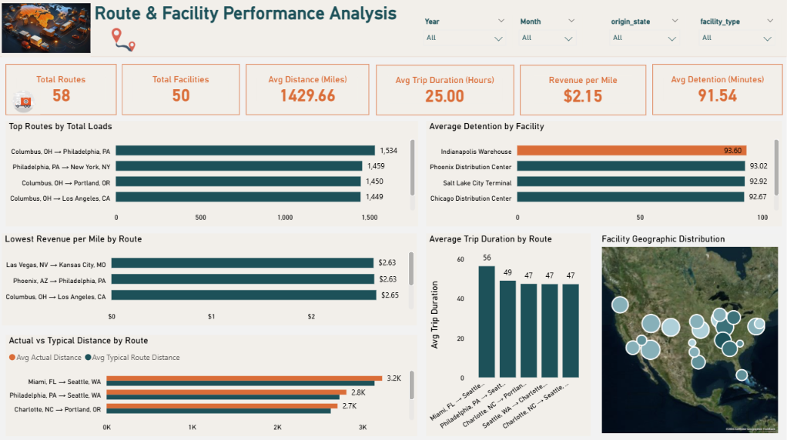
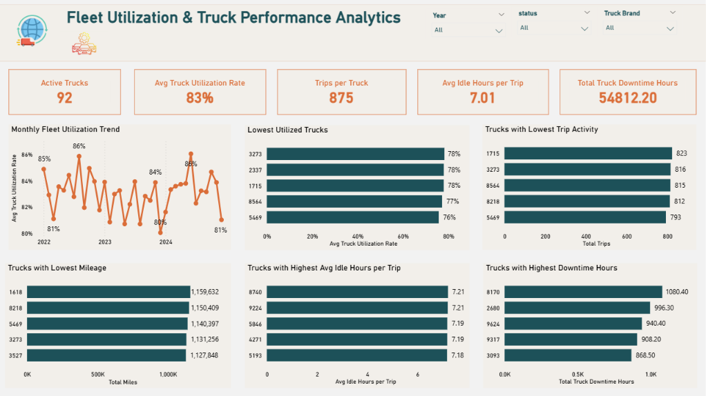
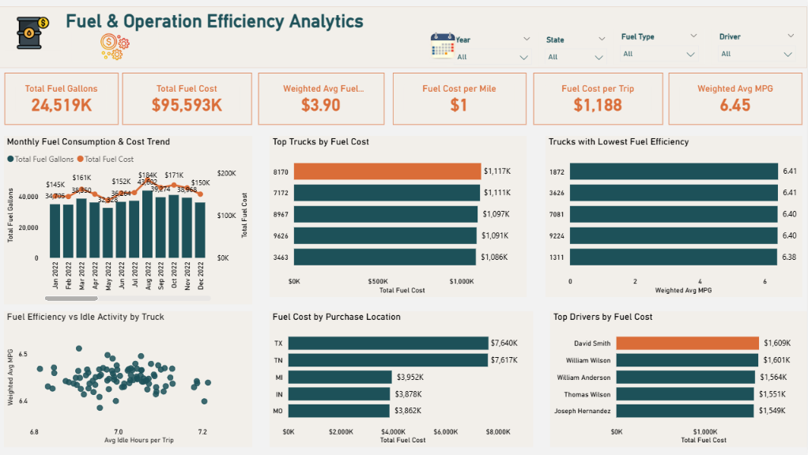
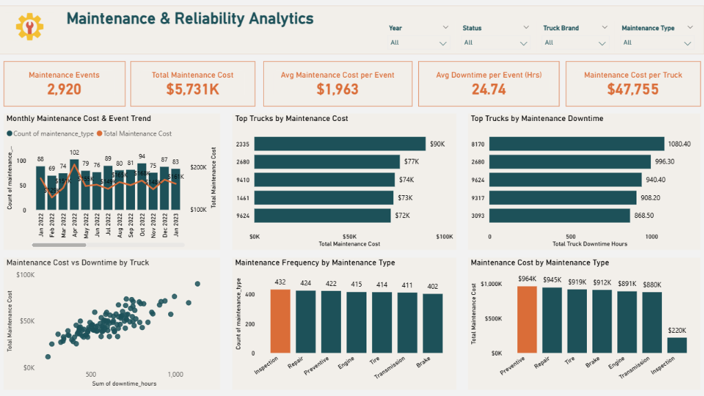
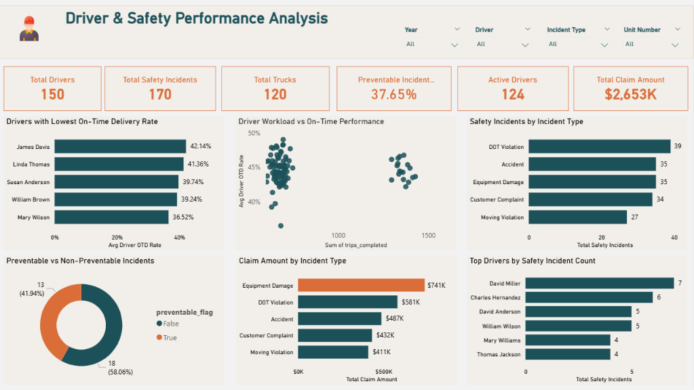

Project Overview
This project is an end-to-end Transportation & Logistics Operations Performance Analytics solution developed in Microsoft Power BI.
The project transforms 500K+ synthetic logistics records into six interactive analytical dashboards covering the major operational areas of a transportation and logistics business: delivery reliability, route and facility performance, fleet utilization, fuel efficiency, maintenance reliability, and driver safety.
The goal is not only to report KPIs, but also to identify service-performance gaps, operational bottlenecks, cost concentrations, asset reliability issues, and safety risks and translate them into practical business recommendations.
Business Problem
The logistics operation lacks an integrated analytical view of transportation execution, delivery reliability, route and facility performance, fleet utilization, fuel efficiency, maintenance reliability, driver performance and safety.
Without a consolidated view, management may struggle to identify service failures, operational bottlenecks, underperforming assets, avoidable cost drivers, and areas of operational risk.
Project Objectives
The objective of this project is to develop an integrated Power BI solution that helps management:
- Monitor transportation and delivery performance.
- Identify weaker routes, facilities, and geographic lanes.
- Evaluate fleet utilization, idle activity, and downtime.
- Analyze fuel consumption, fuel cost, and MPG performance.
- Monitor maintenance cost, frequency, and reliability.
- Evaluate driver performance, safety incidents, preventability, and claims.
- Convert analytical findings into actionable operational recommendations.
Business Questions
- How effectively is the logistics operation executing freight loads and meeting pickup and delivery commitments?
- Which routes, facilities, and geographic lanes are associated with stronger or weaker transportation and service performance?
- How effectively are trucks being utilized, and where are underutilization, excessive idle activity, or downtime concentrated?
- What factors are associated with higher fuel consumption and fuel cost, and where are efficiency opportunities concentrated?
- Which trucks and maintenance categories contribute most to maintenance cost, frequency, and downtime?
- How does driver operational performance vary, and where are safety incidents, preventable events, and claims concentrated?
Analytical Approach
Dashboard






Key Insights
The analysis identified several important areas for operational improvement. Delivery reliability represents a key concern, with 55.39% of deliveries classified as late. Management should investigate post-pickup operations, route conditions, scheduling, and facilities with high detention times to understand the factors contributing to delivery delays.
Route and facility analysis shows that high transportation volume does not always correspond to stronger operational or commercial performance. Routes should therefore be evaluated using multiple measures, including load volume, revenue per mile, trip duration, actual distance, and delivery performance. Facilities with consistently high detention should also be reviewed for potential process or capacity constraints.
Fleet analysis shows an average utilization rate of approximately 83%, but individual trucks demonstrate differences in utilization, trip activity, idle time, and downtime. Management should establish truck-level exception monitoring to identify assets that consistently require operational or maintenance attention.
Fuel represents a significant operating expense. Fuel performance should be evaluated using normalized measures such as MPG, fuel cost per mile, mileage, and workload, rather than total fuel cost alone. This can help distinguish genuine efficiency issues from higher fuel expenditure caused by greater operational activity.
Maintenance analysis shows that cost, frequency, and downtime are concentrated differently across trucks and maintenance categories. High-downtime and high-maintenance-cost trucks should receive deeper reliability analysis, while preventive maintenance expenditure should be evaluated based on its contribution to reducing failures and unplanned downtime.
Finally, safety analysis shows that DOT Violations are the most frequent displayed incident type, while Equipment Damage generates the highest claim exposure. Management should focus on recurring preventable incidents, regulatory compliance, and high-severity safety events while evaluating driver risk relative to workload and operational exposure.
Business Impact
The analysis provides management with an integrated view of transportation, delivery, route, facility, fleet, fuel, maintenance, and safety performance. It highlights operational areas requiring attention, particularly low delivery reliability, facility detention, truck downtime, fuel expenditure, maintenance burden, and safety-related financial exposure. The dashboard supports more data-driven, cost-conscious, and risk-aware logistics decisions.
Business Recommendations
The analysis identified a significant gap between On-Time Pickup (66.73%) and On-Time Delivery (44.61%), indicating a need to investigate post-pickup execution and high-detention facilities. Fleet and maintenance analysis identified specific trucks with relatively lower utilization and concentrated downtime, while fuel analysis highlighted opportunities for efficiency monitoring using MPG and cost-per-mile metrics. Safety analysis showed that DOT Violations were the most frequent incident type, while Equipment Damage generated the highest claim exposure.
Management should prioritize delivery reliability improvement, high-detention facility investigation, truck-level exception monitoring, fuel-efficiency optimization, preventive maintenance and reliability analysis, and targeted safety initiatives for preventable and high-severity incidents.